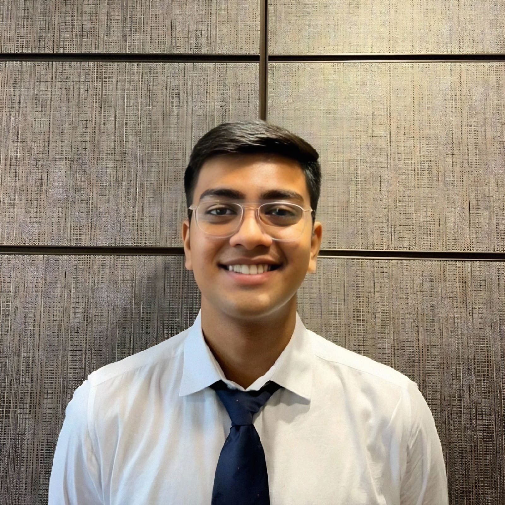

|
Jay Gala I'm a final year Computer Science and Management student at NMIMS University, Mumbai. I am currently working as a research intern with Dr. Xiatian Zhu (scholar) and Sauradip Nag (website) the CVSSP Lab, University of Surrey. I also collaborate with Dr. Sriparna Saha (website) at the Indian Institute of Technology, Patna. If you have an interesting project idea, let's get in touch: |
 |
{kind=link}
ResearchI am broadly interested in Computer Vision and Deep Learning. I have worked on medical images and remote sensing using few-shot, meta, federated learning, etc. Recently, I have shifted my focus on Generative Modeling, 3D Vision, Image and Video Synthesis/Editing. |

|
Adaptive-Labeling for Enhancing Remote Sensing Cloud Understanding
Jay Gala, Sauradip Nag, Huichou Huang, Ruirui Liu, Xiatian Zhu Tackling Climate Change with Machine Learning Workshop, NeurIPS 2023 This work introduces a new algorithm to iteratively improve the existing noisy annotations and extract the best performance from any model via combination of Dynamic Thresholding coupled with FixMatch style optimization. |

|
Enhancing Illegal, Unreported, and Unregulated Fishing Detection through Feature Engineering
Jay Gala, Anmaya Agarwal, Saketh Mantha, Yash Katariya, Prashasti Kanikar Presented at the SAS Curiosity Cup, 2023 (14th global rank achieved) Feature engineering on a novel IUU dataset |

|
Identifying Suspicious Fishing Activity Based on AIS Disabling Events.
Anmaya Agarwal, Jay Gala, Saketh Mantha, Yash Katariya, Prashasti Kanikar In review at the Marine Pollution Bulletin Journal, 2023 Release of a novel dataset of illegal fishing vessels and machine learning techniques for identifying them. |

|
A Review on Detecting Suspicious Fishing Activity
Anmaya Agarwal, Jay Gala, Saketh Mantha, Yash Katariya, Prashasti Kanikar Accepted at ICICN, 2023 A review on existing IUU methods. (Proceedings not yet released) |
Experience |

|
Research Intern
July 2023 - Present Working on remote sensing, noisy label learning, transformers, etc. |

|
Research Intern
May 2023 - Present Working on medical imaging, federated learning, few-shot, meta learning, etc. |
Miscellanies (plural of Miscellaneous) |
| Reviewer in the WiCV Workshop at ICCV 2023, MLH Fellow in the Prep batch of April 2023, TensorFlow Certified Developer (Sponsored by Google to take the test), Graduated from the Google ML Bootcamp in November 2022, Attended CVIT Summer School on Computer Vision in July 2023 |
|
Code copied from Jon Barron's website. |